2026 초등인강 비교 TOP 5｜엘리하이·밀크T·홈런·스마트올·온리원 가격 및 특징 총정리
엘리하이로부터 제품과 원고료를 제공받아 체험 후 작성하였습니다
초등인강을 알아볼 때 가장 많이 비교하는 브랜드는 엘리하이, 밀크T 초등, 아이스크림 홈런, 웅진 스마트올, 온리원 초등입니다. 5곳 모두 초등학생을 위한 온라인 학습 서비스를 제공하지만, 교과 강의 구성과 수준별 학습, 학습관리 방식, 가격 등에서 차이가 있습니다. 초등학교 저학년은 기초학습과 공부 습관이 중요하고, 3~4학년부터는 국어·수학·영어뿐 아니라 사회·과학까지 학습 범위가 넓어집니다. 5~6학년은 중학교 진학을 앞두고 수학 심화와 영어 문법·독해까지 준비해야 하죠. 이번 글에서는 2026년 11월 기준 초등인강 대표 브랜드 5곳의 특징과 가격, 학년별 추천 기준을 비교하고, 어떤 아이에게 적합한지 정리했습니다.
※ 본 비교는 공식 판매량이나 이용자 만족도 순위가 아닌, 각 서비스의 학습 특징과 활용 목적을 기준으로 작성했습니다. 실제 제공 콘텐츠와 가격은 가입 시점 및 상품에 따라 달라질 수 있습니다.
1. 2026 초등인강 비교 TOP 5 한눈에 보기
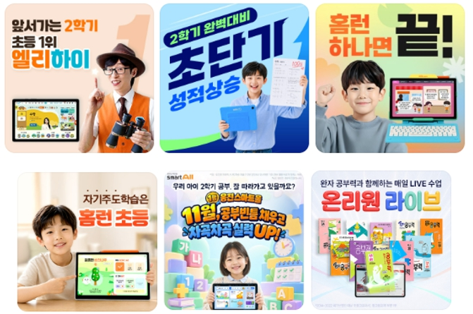
| 브랜드 | 주요 특징 | 추천 학습 목적 |
|---|---|---|
| 엘리하이 | 전 과목 유명 선생님 강의, 수준별 심화, 1:1 담임제 학습관리 | 교과 연계 학습, 수학·영어 실력 향상, 심화·예습 |
| 밀크T 초등 | 천재교육 기반 교과 콘텐츠, 전 과목 학습 | 학교 진도 복습, 교과 기본기 |
| 아이스크림 홈런 | 교과 연계, AI 맞춤학습, 다양한 학습 콘텐츠 | 학습 흥미, 공부 습관 형성 |
| 웅진 스마트올 | AI 맞춤학습, 교과·독서 연계 | 독서와 전 과목 학습 |
| 온리원 초등 | 메타인지 기반 학습, 개념 이해 점검 | 자기주도학습, 개념 이해 |
초등인강 5곳은 모두 학교 공부를 지원하지만 강조하는 학습 영역이 다릅니다. 엘리하이는 과목별 전문 강의와 교과 연계 학습, 기초부터 심화까지 이어지는 학습 구성이 특징입니다. 밀크T는 교과 중심의 학습, 아이스크림 홈런은 교과 연계와 학습 습관, 웅진 스마트올은 AI 학습과 독서, 온리원은 메타인지 학습을 주요 특징으로 살펴볼 수 있습니다.
따라서 특정 브랜드가 모든 초등학생에게 가장 좋다고 보기는 어렵습니다. 아이가 어떤 과목을 집중적으로 공부해야 하는지, 혼자 공부하는 데 익숙한지에 따라 선택 기준도 달라집니다.
2. 초등인강 가격 비교｜월 학습비는 얼마일까?
초등인강은 이용 기간과 학습기 포함 여부, 선택 상품에 따라 월 납부 금액이 달라집니다. 아래는 2026년 11월 기준 공개 가격 자료 및 비교 검색에서 확인되는 참고 금액입니다. 모든 브랜드의 동일 조건을 비교한 확정 가격표는 아니므로 실제 계약 전 최신 요금을 확인해야 합니다.
| 브랜드 | 참고 가격 | 확인할 사항 |
|---|---|---|
| 엘리하이 | 프라임 종합반 24개월 기준 월 119,000원 | 약정 기간, 학습기 포함 |
| 밀크T 초등 | 월 119,000원 | 상품별 월 납부액 |
| 아이스크림 홈런 | 월 118,000원 | 학습기 및 약정 조건 |
| 웅진 스마트올 | 월 79,000원 | 선택 상품과 학습 범위 |
| 온리원 초등 | 상담 및 상품별 확인 필요 | 약정 기간, 학습기 비용 |
가격만 비교하면 상대적으로 저렴한 상품이 눈에 들어올 수 있습니다. 하지만 초등인강은 매일 사용하는 학습 서비스이기 때문에 월 학습비와 함께 강의 수강 범위, 학습관리, 추가 교재 비용까지 확인하는 것이 중요합니다.
특히 계약 전에는 다음 내용을 살펴보는 것이 좋습니다.
- 월 납부액과 약정 기간에 따른 총비용
- 전용 학습기 제공 및 반납 조건
- 교재 구매 등 추가 비용
- 무료체험 가능 여부
3. 초등인강 브랜드별 특징 비교
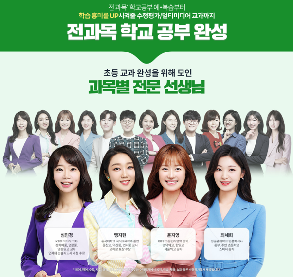
① 엘리하이 초등｜전 과목 학습부터 수학·영어 심화까지
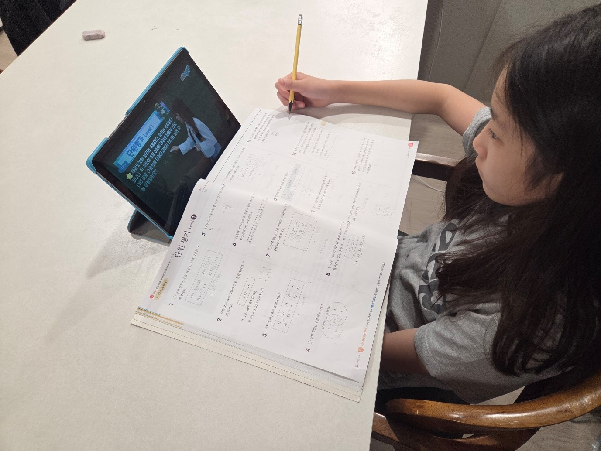
엘리하이는 메가스터디교육의 초등 온라인 학습 서비스로, 국어·수학·영어·사회·과학 등 초등 전 과목 강의를 제공합니다. 학교 교과 진도에 맞춘 강의뿐 아니라 기초 개념, 응용, 심화, 예습까지 아이의 수준에 따라 필요한 강좌를 선택할 수 있습니다. 엘리하이 주요 특징
- 초등 전 과목 유명한 전문 강사진의 강의
- 수학 기초·응용·심화 및 유명 교재 연계 강좌
- 영어 어휘·문법·독해·듣기·말하기 영역별 학습
- 단원평가, 서술형, 수행평가 대비 콘텐츠
- 실제 선생님의 1:1 학습관리
- 학습 전용 기기를 활용한 학습
수학은 디딤돌수학, 최상위수학, 문제 해결의 길잡이 등 다양한 교재 해설 강의가 있습니다.
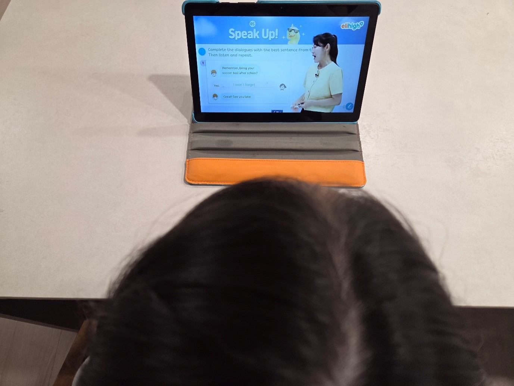
학교에서 배운 개념을 복습하거나 응용·심화 문제를 집중적으로 공부할 수 있고, AI스마트매쓰를 통해 부족한 문제 유형을 반복해서 연습할 수도 있습니다.
영어는 교과 강의 외에도 VOCA SOS, 스마트그래머+, 영어도서관, AI TALK TRIP 등 영역별 학습 콘텐츠를 제공합니다.
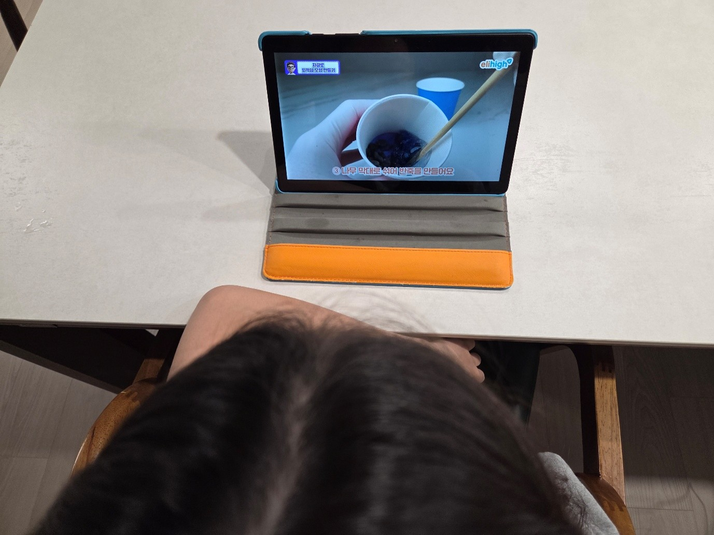
기초 어휘부터 문법, 독해, 듣기, 말하기까지 아이의 수준에 맞춰 공부할 수 있어 고학년 영어와 중학교 영어를 준비할 때도 활용할 수 있습니다.
국어·사회·과학 역시 학교 진도에 맞춘 교과 강의와 평가 콘텐츠를 제공하며, 수행평가+에서는 보고서 작성과 발표 등 다양한 수행평가 유형을 연습할 수 있습니다.
추천 대상: 학교 교과 공부와 함께 수학 심화·예습, 영어 실력 향상까지 준비하고 싶은 초등학생에게 추천합니다. 특히 혼자 학습 계획을 세우고 실천하기 어려운 아이라면 실제 선생님의 정기적인 관리를 받을 수 있는 엘리하이를 고려해 볼 만합니다.
② 밀크T 초등｜학교 교과 중심의 전 과목 학습
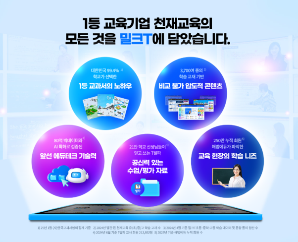
밀크T 초등은 천재교과서의 초등 온라인 학습 서비스입니다. 국어·수학·영어·사회·과학 등 주요 과목을 공부할 수 있으며, 교과 진도와 연계한 학습 콘텐츠 이용이 가능합니다. 밀크T 초등 주요 특징
- 초등 주요 과목 교과 학습
- 천재교육 계열의 교육 콘텐츠
- 수준별 영어 및 수학 학습 학교에서 배우는 내용을 중심으로 복습하고, 과목별 기초 개념을 꾸준히 공부하려는 학생에게 비교 대상이 될 수 있습니다. 추천 대상: 학교 진도에 맞춰 전 과목을 골고루 공부하고 싶은 초등학생.
③ 아이스크림 홈런｜교과 연계와 공부 습관 형성
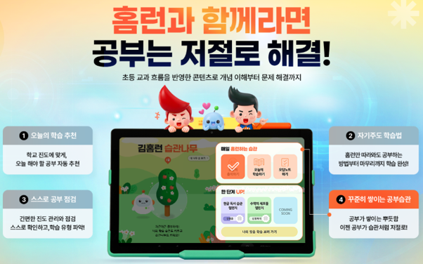
아이스크림 홈런은 아이스크림에듀의 초등 온라인 학습 서비스입니다. 교과 학습과 AI 기반 맞춤학습, 다양한 디지털 콘텐츠를 제공하는 것이 특징입니다. 아이스크림 홈런 주요 특징
- 초등 교과 연계 학습
- AI 기반 학습 분석 및 추천
- 다양한 학습 활동과 콘텐츠 아직 공부하는 습관이 충분히 잡히지 않은 저학년이라면 매일 정해진 학습을 진행할 수 있는지 살펴보면 좋습니다. 추천 대상: 초등 저학년이나 매일 꾸준히 공부하는 습관을 기르고 싶은 학생.
④ 웅진 스마트올｜AI 맞춤학습과 독서 콘텐츠
웅진 스마트올은 웅진씽크빅의 AI 기반 학습 서비스입니다. 초등 교과 학습과 함께 독서 관련 콘텐츠를 활용할 수 있다는 것이 주요 특징입니다. 웅진 스마트올 주요 특징
- AI 기반 맞춤형 학습
- 초등 전 과목 교과 콘텐츠
- 독서 및 문해력 관련 학습 학교 공부와 함께 책 읽기, 독해, 문해력 학습까지 고려하는 가정에서 비교해볼 수 있습니다. 추천 대상: 교과 학습과 독서를 함께 챙기고 싶은 초등학생.
⑤ 온리원 초등｜메타인지 기반 개념 학습
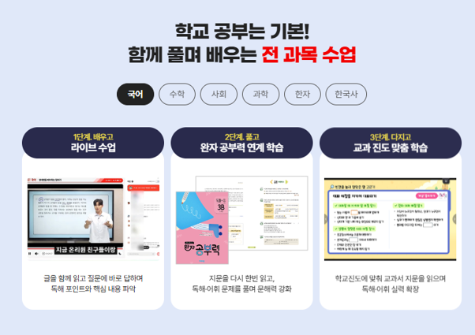
온리원 초등은 비상교육의 초등 온라인 학습 서비스이며 메타인지 학습법을 강조합니다. 온리원 초등 주요 특징
- 메타인지 기반 학습 콘텐츠
- 초등 주요 과목 교과 학습
- 개념 이해와 문제 해결 과정 점검 단순히 강의를 듣고 문제를 푸는 것에서 나아가, 배운 개념을 스스로 설명하거나 이해도를 확인하는 학습을 중요하게 생각한다면 비교해볼 만합니다. 추천 대상: 개념을 정확하게 이해하고 자기주도학습 능력을 기르고 싶은 초등학생.
4. 학년별 초등인강 추천｜1학년부터 6학년까지
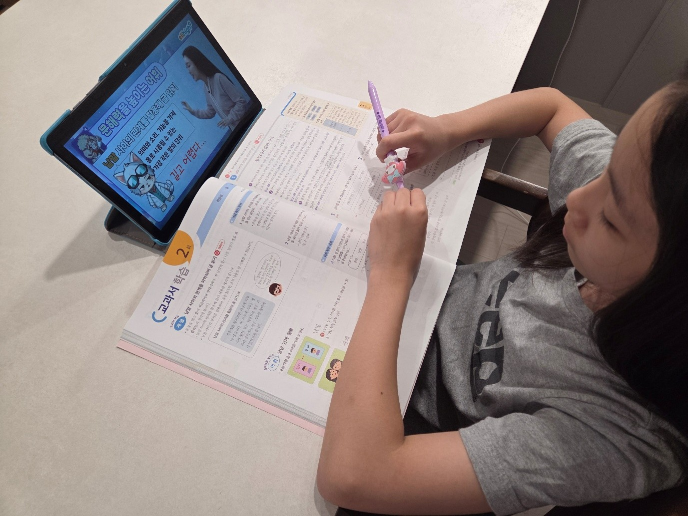
초등인강을 선택할 때는 현재 학년에 따라 필요한 학습 내용을 구분하는 것이 좋습니다.
| 학년 | 중점 학습 | 비교할 서비스 |
|---|---|---|
| 초1~2 | 한글·독해 기초, 연산, 공부 습관 | 엘리하이, 밀크T |
| 초3~4 | 전 과목 교과 학습, 수학 응용, 영어 기초 | 엘리하이, 스마트올 |
| 초5~6 | 수학 심화, 영어 문법·독해, 중등 연계 | 엘리하이, 온리원 |
※ 위 브랜드 순서는 공식 평가 순위가 아닌 학년별 학습 목적에 따른 비교 예시입니다.
초등 1~2학년
저학년은 공부하는 시간과 습관을 일정하게 유지하는 것이 중요합니다. 국어는 읽기와 쓰기, 수학은 기초 연산과 수 개념, 영어는 파닉스와 기초 어휘부터 살펴보는 것이 좋습니다. 아직 혼자 공부하기 어렵다면 학습 계획을 안내하고 진도를 확인해주는 서비스인지 비교해보세요.
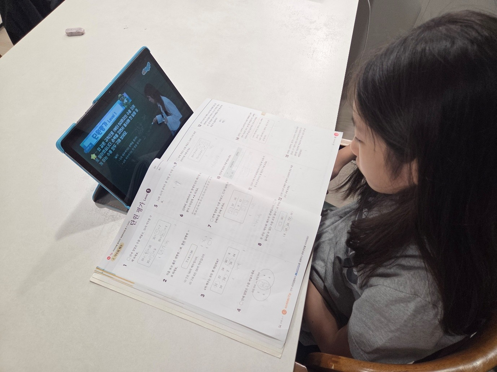
초등 3~4학년
3학년부터는 사회와 과학을 배우고, 수학도 이전보다 복잡한 개념을 다루기 시작합니다. 따라서 전 과목 교과 강의와 함께 수학 응용 문제, 영어 어휘·문법, 국어 독해까지 학습할 수 있는지 확인하는 것이 좋습니다. 특히 과목마다 실력 차이가 있다면 필요한 강좌를 개별적으로 선택할 수 있는 초등인강이 유용합니다.
초등 5~6학년
고학년은 중학교 공부로 이어지는 기초를 다지는 시기입니다. 수학은 분수와 소수의 계산, 비와 비율, 도형 등 주요 개념을 정확하게 이해해야 하고, 영어도 어휘와 문법, 독해 학습의 비중을 높일 필요가 있습니다. 이 시기에는 단순한 교과 진도 학습보다 기초부터 심화까지 학습 범위를 넓힐 수 있는지가 중요한 비교 기준입니다.
5. 수학·영어 실력 향상이 목표라면?
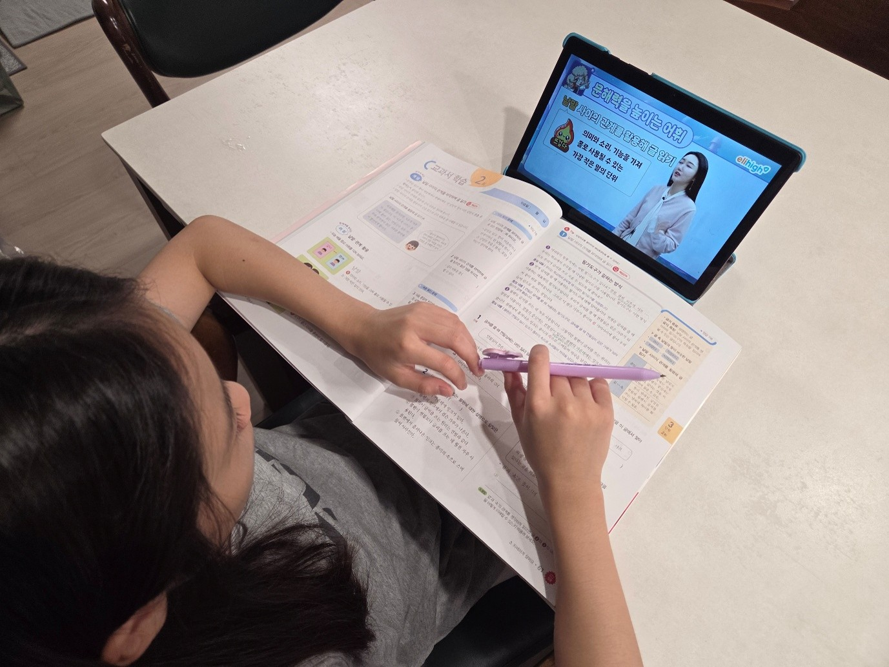
초등인강을 선택하는 목적이 수학과 영어 실력 향상이라면 해당 과목의 강좌 구성부터 살펴보는 것이 좋습니다.
초등수학｜개념부터 심화까지
초등수학은 같은 학년이라도 아이의 실력에 따라 필요한 학습이 다릅니다. 기초가 부족하다면 개념을 다시 설명해주는 강의가 필요하고, 학교 수학을 어려움 없이 공부한다면 응용과 심화 문제를 추가할 수 있어야 합니다. 엘리하이는 교과 개념 강의 외에도 다양한 수학 문제집 연계 강좌를 제공합니다. 예를 들어 개념 강의를 들은 후 디딤돌수학이나 최상위수학 등 아이의 수준에 맞는 교재 강좌를 선택할 수 있습니다. AI스마트매쓰 학습 앱을 활용해 문제를 풀고 부족한 유형 복습이 가능해 오답 정리를 하기에 좋습니다.
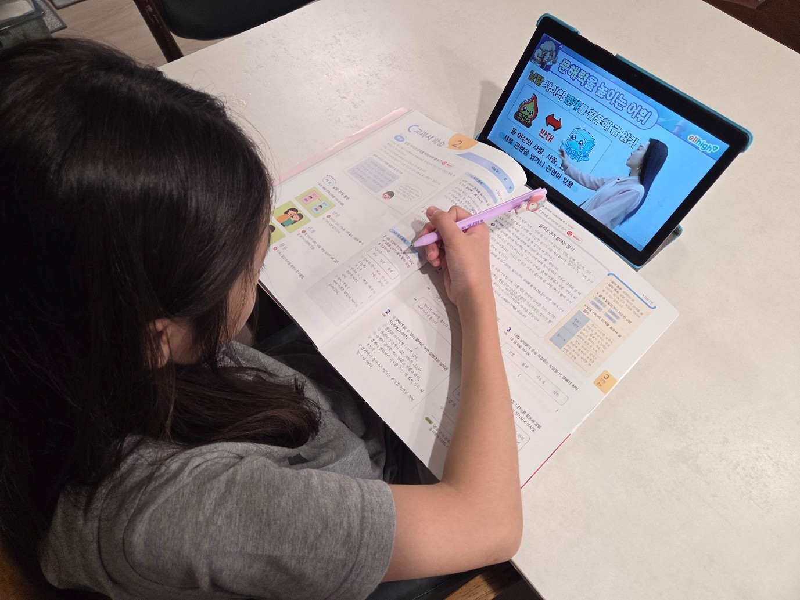
초등영어｜어휘·문법·독해·말하기
초등영어는 학년이 올라갈수록 학습 영역이 넓어집니다. 저학년은 파닉스와 기초 어휘, 고학년은 문법과 독해, 듣기와 말하기까지 균형 있게 공부하는 것이 중요합니다. 엘리하이의 VOCA SOS는 3,600개 단어를 학습할 수 있는 어휘 콘텐츠로 발음 및 스펠링 학습이 가능합니다. 영어도서관에서는 다양한 영어 원서를 읽을 수 있고, AI TALK TRIP을 통해 영어 말하기 연습도 가능합니다. 초등영문법 777, 초등천일문 등 교재 연계 강좌도 있어 중학교 진학을 앞둔 고학년이 문법과 독해를 공부할 때 활용할 수 있습니다.
6. 초등인강 학습관리 비교｜AI 관리와 선생님 관리의 차이
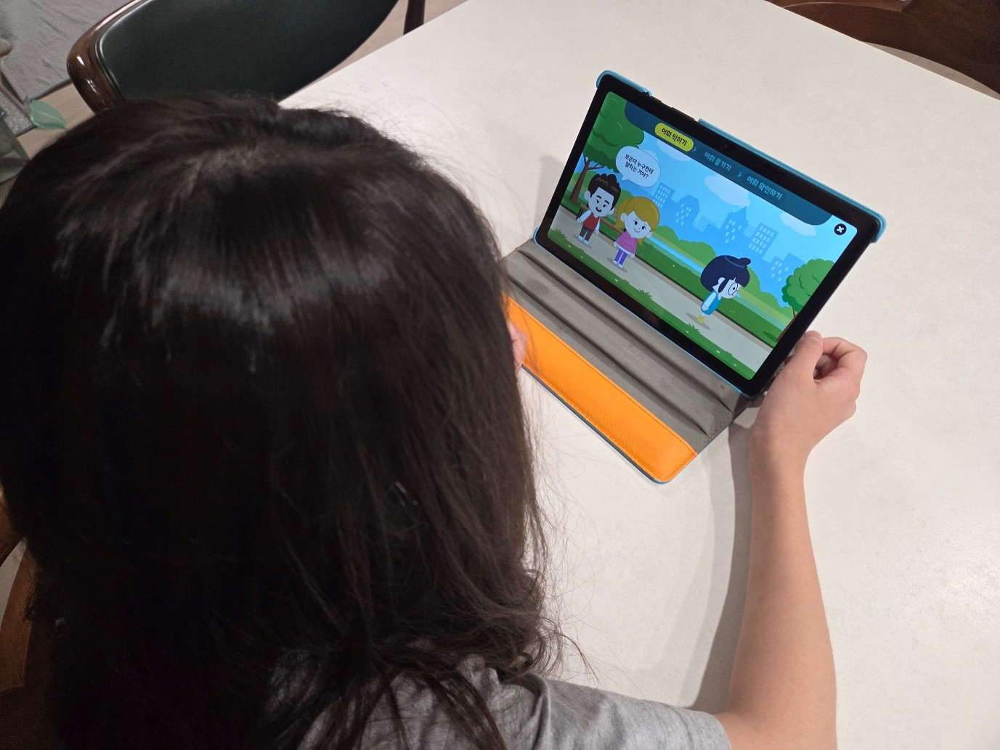
최근에는 AI를 활용해 학습 진도를 분석하고 아이의 수준에 맞는 공부를 추천하는 초등인강이 많아졌습니다. AI 학습관리는 학습 기록과 문제 풀이 결과를 바탕으로 부족한 부분을 파악하고 필요한 학습을 추천한다는 장점이 있습니다. 하지만 초등학생은 아직 스스로 학습 계획을 세우고 꾸준히 실천하는 데 어려움을 겪을 수 있습니다. 따라서 학습 진도를 확인하는 것뿐 아니라 실제 선생님과 소통하며 공부 습관을 잡아가는 과정도 중요합니다. 엘리하이는 실제 선생님이 1:1로 배정되어 아이의 학습 진도와 과목별 학습 상황을 살펴보는 등 맞춤 학습관리를 진행합니다. 아이와는 월 3회 정기적으로 상담하며 학습 계획을 얼마나 실천했는지 확인하고, 어려워하는 과목이나 부족한 단원을 점검해 다음 학습 계획을 세울 수 있도록 지도합니다. 학부모와도 월 1회 상담을 진행합니다. 아이의 학습 현황과 공부 습관을 공유하고, 가정에서 어떤 부분을 더 신경 써야 할지 함께 확인할 수 있습니다. 특히 혼자 공부하는 습관이 아직 잡히지 않은 초등학생이라면 AI 학습 분석뿐 아니라 실제 선생님의 정기적인 학습관리까지 받을 수 있는지 비교해 보는 것이 좋습니다.
7. 학습 목적별 초등인강 추천 정리
| 학습 목적 | 우선 비교할 브랜드 | 이유 |
|---|---|---|
| 수학 심화·예습 | 엘리하이 | 수준별 강의와 교재 연계 학습 |
| 영어 문법·독해·말하기 | 엘리하이 | 영역별 전문 강의와 영어 콘텐츠 |
| 학교 교과 전 과목 복습 | 엘리하이, 밀크T | 교과 중심 강의 구성 |
| 공부 습관 형성 | 엘리하이, 아이스크림 홈런 | AI 학습 및 다양한 학습 콘텐츠 |
| 독서와 문해력 | 엘리하이, 웅진 스마트올 | 교과와 독서 콘텐츠 연계 |
| 자기주도학습 | 엘리하이, 온리원 | 이해도 점검 중심 학습 |
| 선생님의 1:1 학습관리 | 엘리하이 | 정기적인 담임 상담 |
8. 초등인강 무료체험 비교 시 확인할 사항
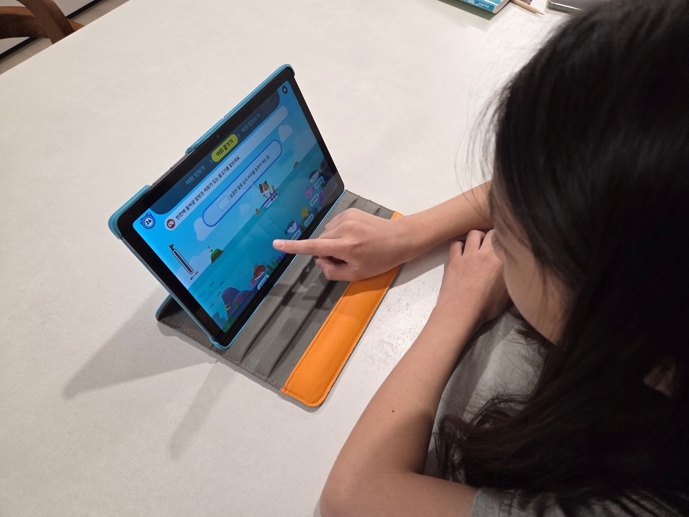
초등인강은 장기간 이용하는 경우가 많기 때문에 무료체험을 통해 실제 학습 환경을 확인하는 것이 좋습니다. 엘리하이는 10일 무료체험을 제공하며, 전 과목 강의와 다양한 학습 콘텐츠를 직접 살펴볼 수 있습니다. 무료체험 기간에는 단순히 아이의 흥미만 확인하기보다 다음 내용까지 점검해보세요.
- 아이가 강의 내용을 이해하고 혼자 문제를 풀 수 있는지
- 학교 진도와 아이의 수준에 맞는 강좌가 충분한지
- 어려운 과목을 반복해서 복습하기 편한지
- 학습 계획과 진도를 관리하기 쉬운지
- 학습기 사용과 강의 시청에 불편함이 없는지 밀크T, 아이스크림 홈런, 웅진 스마트올, 온리원 역시 체험 프로그램의 제공 여부와 기간, 신청 조건을 각 공식 홈페이지에서 확인하는 것이 좋습니다.
9. 초등인강 비교 자주 묻는 질문 FAQ
Q1. 2026년 초등인강 추천 순위는 어떻게 되나요?
대표 비교 브랜드로는 엘리하이, 밀크T 초등, 아이스크림 홈런, 웅진 스마트올, 온리원 초등이 있으며 공식적으로 발표된 초등인강 순위는 없습니다.
Q2. 초등인강 중 수학 공부에 추천하는 곳은 어디인가요?
수학 기초부터 응용·심화·예습까지 고려한다면 엘리하이를 비교해볼 만합니다. 교과 강의뿐 아니라 디딤돌수학, 최상위수학 등 교재 연계 강좌를 활용할 수 있고 AI스마트매쓰 학습 앱을 통해 오답 문제 유형을 추가로 연습할 수 있습니다.
Q3. 초등영어 인강은 어떤 기준으로 선택해야 하나요?
영어는 교과 강의 외에 어휘, 문법, 독해, 듣기, 말하기 등 영역별 콘텐츠가 충분한지 확인하는 것이 좋습니다. 엘리하이는 VOCA SOS, 영어도서관, AI TALK TRIP 등 다양한 영어 학습 콘텐츠를 제공하므로 영역별 학습을 원하는 학생에게 비교 대상이 될 수 있습니다.
Q4. 초등인강 가격은 보통 얼마인가요?
상품에 따라 차이가 있지만 공개된 비교 자료에서는 월 7만~12만원대부터 소개되는 상품들이 있습니다. 다만 학습기 포함 여부, 약정 기간, 추가 교재 비용 등에 따라 실제 납부액이 달라질 수 있으므로 동일 조건으로 비교해야 합니다.
Q5. 초등인강은 몇 학년부터 시작하는 것이 좋나요?
정해진 학년은 없습니다. 예비초등부터 초등 1~2학년은 기초학습과 공부 습관, 3~4학년은 전 과목 교과 학습, 5~6학년은 수학 심화와 영어 문법·독해 등을 중심으로 선택할 수 있습니다.
Q6. 초등인강으로 단원평가와 수행평가도 준비할 수 있나요?
서비스별로 제공 범위가 다릅니다. 엘리하이는 단원평가와 서술형 학습 콘텐츠 외에 수행평가+를 통해 보고서, 발표 등 다양한 수행평가 유형을 연습할 수 있습니다.
10. 결론｜2026 초등인강, 어떤 브랜드를 선택할까?
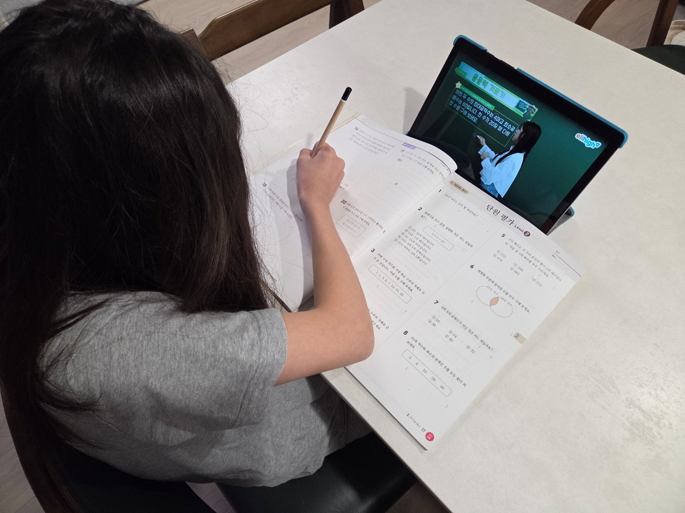
2026년 초등인강을 비교해 보면 브랜드마다 강의 구성과 학습관리 방식에 차이가 있습니다. 따라서 아이의 학년과 현재 실력, 집중적으로 공부해야 할 과목을 기준으로 선택하는 것이 좋습니다. 특히 학교 공부뿐 아니라 수학 심화·예습, 영어 문법과 독해까지 함께 준비하고 싶다면 엘리하이를 추천합니다. 초등 전 과목 강의와 다양한 수준별 학습 콘텐츠를 활용할 수 있고, 실제 선생님의 1:1 학습관리도 받을 수 있어 교과 공부와 자기주도학습을 함께 챙길 수 있습니다. 엘리하이는 10일 무료체험도 가능하니 초등인강을 알아보고 있다면 아이가 직접 강의를 들어보고 학습 구성과 관리 서비스를 살펴본 후 선택해 보시기 바랍니다.